High Frequency Quoting and Market Manipulations
Romain Lafarguette, DG-MF/FRE
Very Preliminary
This guy forgot a break condition in his algorithm…
Identifying HFT
Start with a $1.5 billion question
A 1.5 billion USD question
How long does it take to send a roundtrup signal Tokyo-London ?
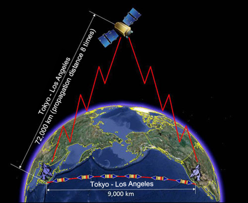
230 millisecond (0.23s)
Reaction of the fastest man alive: 150 ms (Berlin World Championships, 2009)
Human average: 265ms (for young men)
USD 1.5 billion
The cost of reducing London-Tokyo latency from 230ms to 170ms (Russian Optical Transarctic Cable System) operational at the end of 2016
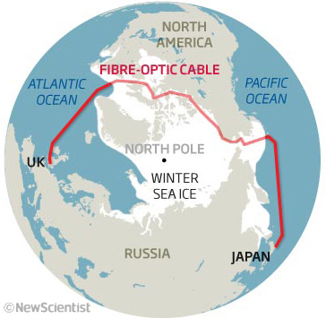
Appetite-teaser
Agenda
- High-frequency trading (HFT) and market manipulation
- Conceptual framework for understanding HFT strategies
- New identification strategy for market manipulation
- Backtest on real data using a natural market experiment
- Policy recommendations for regulations
Main Messages
- HFT is neither "good" nor "bad"
- Trading strategies matter
- In particular high-frequency quoting
- New method for identifying high-frequency manipulations
- Backtest on real data, using a natural market experiment
What is High Frequency Trading ?
HFT definition accord to MIFID II
HFT is an algorithmic trading technique that is characterised by:
- Infrastructure intended to minimise network and other types of latencies
- System-determination of order initiation, generation, routing or execution without human intervention for individual trades or orders
- High message intraday rates which constitute orders, quotes or cancellations
Evolution of high-frequency trading across time

Daily HFT trading. Credits: Nanex
When HFT Becomes Visible: Flash Crashes
Why should we care about HFT ?
- Highly leveraged agents + fire sales = systemic risk via reactions chains
- Evaporating liquidity and weaker monetary policy transmission channel
- Market integrity and unfair treatment of institutional investors
The US equity flash crash: May 6th 2010
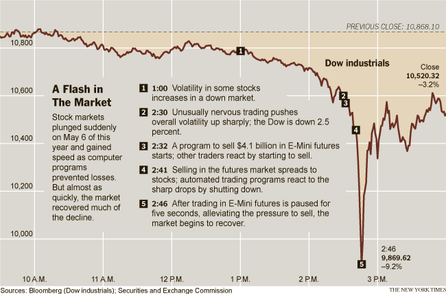
5-minutes crash: equivalent to the Danish GDP !
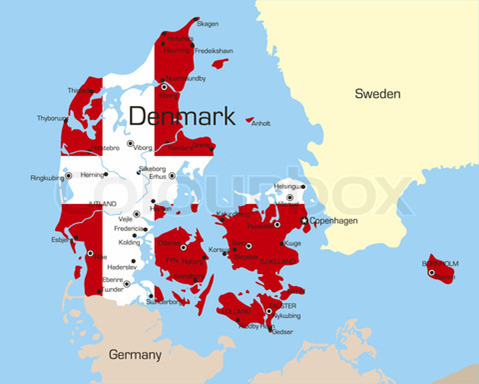
The US Treasury Flash Crash (see IMF December 2015)
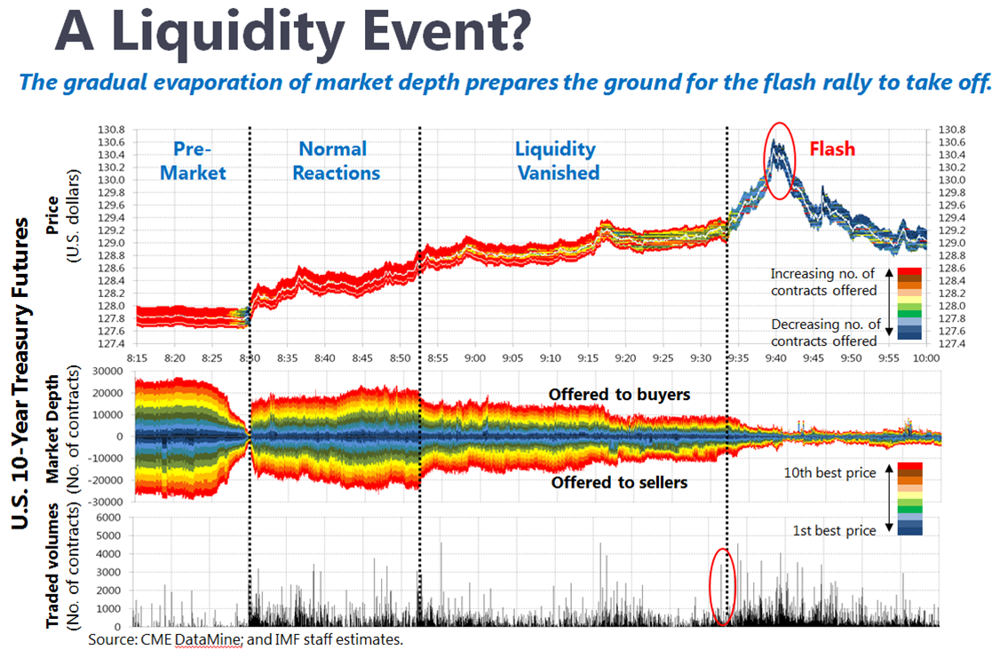
This guy forgot a break condition in his algorithm…
Any role for regulation ?
William Dudley, NY Fed President (Sept 2015):
regulations on such [HFT] activities may be needed fiven liquidity tends to dry up in times of stress
HFT: Controversies and Conceptual Framework
Pros and cons of HFT for financial markets
| Pros | Cons |
|---|---|
| Liquidity Provision | Shock Amplifiers ? |
| Improve information processing | Liquidity mirage |
| Enhance price discovery | Discourage institutional market makers |
| Reduce transaction costs | Predatory strategies |
The fundamental regulatory trade-off
- Ensure markets well-functionning and resilience
- Fair treatment of every participants (esp. low-latency traders)
- Preserve liquidity and industry's incentives to trade (profits)
FRE staff daily tasks :-)
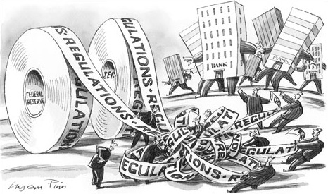
The MiFID II regulatory approach
- Disclosure requirements and trading risks controls
- Taxation and trading fees regimes
- Technical limitations on the trading plateforms
- Market making and trading obligations
New Conceptual Framework: It's All About Quoting !
A typology of trading strategies
- Per se, HFT is neither "bad" nor "good"
- What matters is the trading strategy implemented
- Fundamental distinction between:
- High-frequency market making (liquidity provision)
- Arbitrage activities (price discovery)
- Predatory strategies (market manipulation)
Prey and predators: some examples (see Biais 2010)
- Stuffing: submit very large number of orders => generate congestion and confusion
- Smoking: attract slow traders with generous offers terms and revise them downwards, hoping to execute them profitably
- Spoofing: place a large number of orders in the opposite direction to the fast trader's true intention, in order to move prices to the benefit of the fast trader
From high-frequency trading to high-frequency quoting
- What matters is not high-frequency trading but high-frequency quoting
- A large part of predatory strategies are based on misinformation quoting
- Some evidences are clearly pointing towards this direction
Message growth
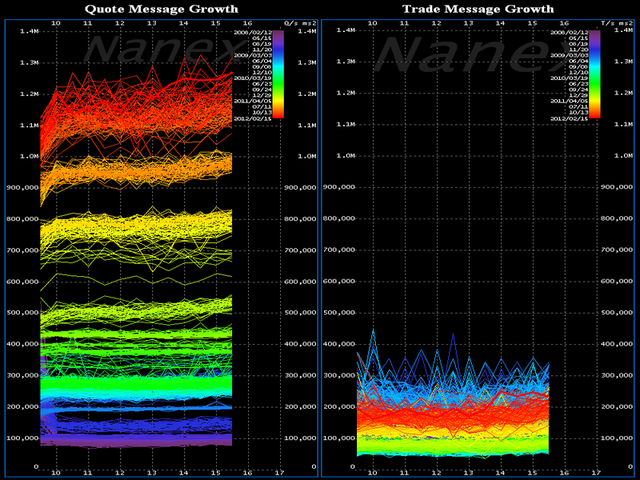
Cumulative trades and quotes per seconds
Daily trade and quote counts for US stocks
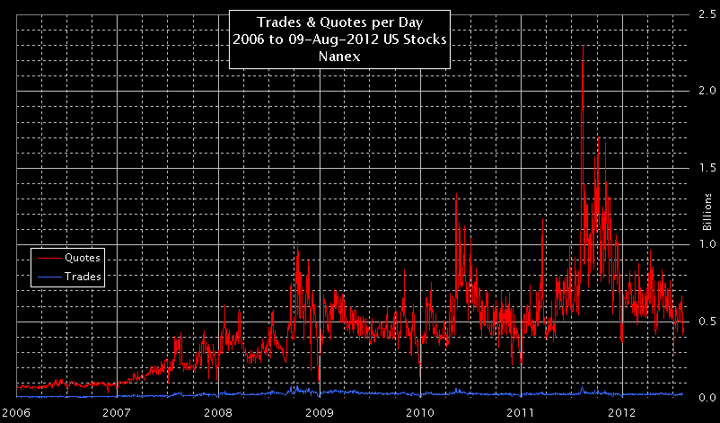
Research questions
- Supervision: How to identify the predatory strategies in real time ?
- Academic: How to measure the impact of these strategies on market volatility/flash crashes ?
- Policy: How to design regulations able to tackle this issue while preserving markets functionning ?
Identification Overview
Identification Challenges
- Data: need high-frequency data with both quotes & trades
- Strategies: need to identify the different strategies from anonymous data
- Endogeneity: strategies and market conditions are simultaneously determined
Data
- Data availability: EBS FX trading:
- Q1 2014 & Q1 2015
- >6 billion observations
- 30 currency pairs
- >200 GB of data
- 100 milliseconds time span
- "Level 5 data" : quotes and deals, prices and volumes, trade side
- Covers before and after WM Reuters fixing methodology
- Covers SNB move (15/01) and EURUSD flashcrash (18/03)
EBS terminal and data
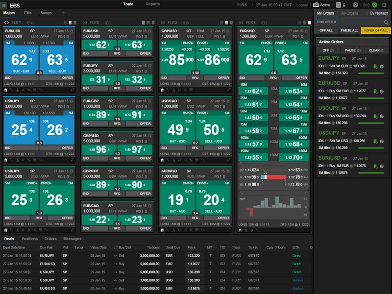
Identification Strategy
Identifying HFT
Identification of Quoting Strategies
- Idea: spoofing strategies consists in overloading the market with quotes at a specific level. Spoofing should therefore impact pips distribution
- Identification strategy: pips distribution degree of deviation from Benford's law
Benford's Law
The probability that \(d (d \in {0,1,...,9})\) is encountered as the \(n-\) th (n > 1) digit is:
\(\sum^{k=10^{n-2} - 1}_{k=10^{n-2}} \log_{10} (1 + \frac{1}{10k + d})\)
Intuition behind the Benford's law
- It is all about scale invariance
- Intuition: growth rate of city population
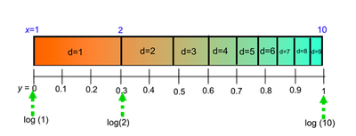 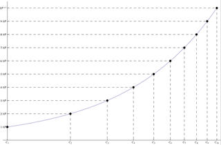
Benford's law applications
- Accounting fraud detection: suggested by Hal Varian in 1972. Used by the US and Swiss fiscal authorities to check up tax declarations
- Financial data: Corrazza et al. (2010) have applied the Benford Law to SP500 stocks quotation and found that during major crisis (2007), the distribution deviates strongly
- Macroeconomic data: the Greek figures before entering the European Union were probably fraudulent
- Election data: application to Iran
Benchmarking the Benford's Law: concepts
- Need a metric to measure the distance between two distributions
- I built a statistic over a distance metric : \(\mathbb{D} \left(\hat{\theta} -
\mathcal{B}(r) \right) \sim \mathcal{P}()\) where:
- \(\mathbb{D}\) is a distance metric
- \(\hat{\theta}\) is the empirical digit distribution
- \(\mathcal{B}(r)\) is the Benford's distribution
- \(r\) is the rank of the digit I benchmark the distribution again
- \(\mathcal{P}()\) is the distribution of the test under the assumption that \(H_0\) is true (OK, I know Bayesian guys are fancy at the ECB but I stay faithful to the frequentists)
- NB: when \(r \rightarrow \infty\) then \(\mathcal{B}(r) \rightarrow \mathcal{U}(0,10)\) (typically r>4 is enough to be close to a discrete uniform)
Benchmarking the Benford's law: metric choice
- Usually, statisticians use as metric either a \(\chi^2\) test or a Kolmogorov-Smirnov (KS) test
- However, other metrics have been proposed which are powerful enough at finite
distance (+ derivation of the critical values at 1% ,5% and 10%):
- Leemis \(m = \sqrt{N} \ \max_{i=1}^{9} \left\{\text{Pr}(\text{X}: \text{digit} = i) - \text{log}_{10}(1 + 1/i) \right\}\)
- Cho-Gaines' \(d= \sqrt{N \ \sum_{i=1}^{9} \left[Pr(\text{X}: \text{digit} = i) - \text{log}_{10}(1 + 1/i) \right]^{2}}\)
- I use the 2 last ones and run robustness checks on the 2 first ones…
Graphical intuition
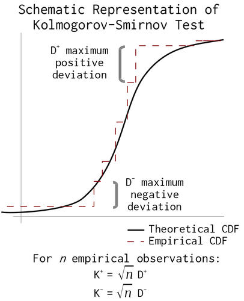
Implementation challenges
- Where to look ?
- How can I be sure that my metric is correct ?
- Ideally, I would need an exogenous shock to test my identification strategy
Backtesting
The 15 February 2015 WM Reuters Fixing Reform
- 2013-2014: scandal of the WM Reuters and ECB fixing manipulation
- Consequence: on 15 February 2015
- Reuters decides to have a new methodology
- Time windows for computing the fixing was changed from 30 seconds to 5 minutes
Before the reform
After the reform
Cho-Gaines distance before and after
Leemis distance before and after
Deviation and volatility (very very preliminary)
Policy Implications
Markets supervision
My modified approach of the Benford's test to test for markets anomaly is:
- Easy to implement: just need to observe quotes stream and limited computing capacities
- Comprehensive: works on anonymized data (what the regulators observe)
- Manipulation-proof : resilient to predatory counter-measures as it is based on the same information that the "preys" receive
Regulations: separating the wheat from the chaff
- High-frequency quoting (HFQ) has little to do with markets efficiency and liquidity (\(\neq\) high-frequency trading)
- Regulating HFQ is easy at the plateform level:
- Limit quote posting/time interval for a given terminal
- Limit quote cancellation (last-look option) via time/volumes
- Impose quote duration latence
- Regulating HFQ would have no impact on liquidity nor market efficiency
- Reduces noise and improve information processing, especially for low-latency traders
- NB: I should investigate more broady the question of high-frequency messaging
Contributions and Way Forward
Contributions
- Conceptual framework
- HFT is neither "good" nor "bad": trading strategies matter
- Among these strategies, what we should focus on is high-frequency quoting
- Identification strategy
- Easy and straightforward: based on pips distribution deviation
- Backtested on real data and confirmed by a natural market experiment
- Policy recommendations
- Monitoring tool for regulators
- Regulations on the trading platforms
Way forward
- Test it on more currencies & on a larger time span
- Look at the ECB fixing (2.30 pm ECT) as well
- Consider the significance thresholds on the distributions metric
- Optimize the benchmarking to heuristic distributions (non-parametric)
- Run impact analysis on volatility and liquidity measures